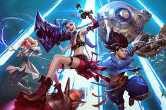

League Of Legends
 League of Legends (también conocido por sus siglas LoL) es un videojuego del género multijugador de arena de batalla en línea (MOBA) y deporte electrónico el cual fue desarrollado por Riot Games para Microsoft Windows y OS X y para consolas digitales.El juego fue diseñado para el sistema operativo Microsoft Windows y lanzaron una beta para OS X, dejando al poco tiempo el proyecto de lado. Esta beta ha sido mejorada por parte de usuarios del juego, haciendo posible jugar a una versión actualizada de League of Legends.
En octubre de 2012, contaba con 70 millones de jugadores registrados. Para marzo de 2013 se registró 5 millones de jugadores conectados al mismo tiempo en todo el mundo. Es un juego de alta competitividad siendo uno de los juegos más populares de los deportes electrónicos (e-sports). El juego está inspirado en el popular mapa personalizado del Warcraft III, Defense of the Ancients: Allstars, diseñado por Steve «Guinsoo» Feak, el cual a su vez está basado en el escenario de StarCraft «Aeon of Strife».
League of Legends fue bien recibido en su lanzamiento, ganando elogios por sus diversos departamentos artísticos y musicales, particularmente por su diseño de personajes (154 campeones) y valor de producción. League tiene muchos seguidores en plataformas de transmisión como YouTube y Twitch. En septiembre de 2019, Riot Games dijo que el juego contaba con casi 8 millones de usuarios concurrentes cada día. La popularidad del juego ha llevado a productos y vínculos en otros medios, como videos musicales, series web, cómics, documentales y una próxima serie animada de Netflix. League Of Legends tiene una escena competitiva próspera, a menudo descrita como el deporte mundial preeminente. El Campeonato Mundial de League of Legends de 2019 tuvo más de 100 millones de espectadores únicos, alcanzando un máximo de espectadores simultáneos de 44 millones, con un premio mínimo de 2,5 millones de dólares.Valorant
Valorant está siendo desarrollado y publicado por Riot Games, que previamente desarrolló League of Legends. El desarrollo comenzó en 2014, dentro de su división de investigación y desarrollo. A Joe Ziegler, Director del videojuego Valorant, se le atribuye la creación de la idea inicial de Valorant al formular qué otros videojuegos podría desarrollar Riot al hablar con otros diseñadores de videojuegos. David Nottingham es el director creativo de Valorant. Trevor Romleski, exdiseñador de League of Legends y Salvatore Garozzo, exjugador profesional y diseñador de mapas de Counter-Strike: Global Offensive son diseñadores de juegos de Valorant. El juego utiliza el motor Unreal Engine.
Teamfight Tactics
 Teamfight Tactics (TFT) es un videojuego auto battler desarrollado y publicado por Riot Games. Inicialmente lanzado como modo de juego para League of Legends para Windows y macOS el 26 de junio de 2019 y, se lanzó para Android y iOS el 19 de marzo de 2020, excluyendo el sureste de Asia, en el cual está retrasado para finales de 2020.
Teamfight Tactics (TFT) es un videojuego auto battler desarrollado y publicado por Riot Games. Inicialmente lanzado como modo de juego para League of Legends para Windows y macOS el 26 de junio de 2019 y, se lanzó para Android y iOS el 19 de marzo de 2020, excluyendo el sureste de Asia, en el cual está retrasado para finales de 2020.
Consiste en formar un equipo de hasta 9 campeones (es posible tener un equipo mayor con ayuda de objetos especiales) y durar el máximo tiempo posible intentando ser el último con vida. La arena consta de hexágonos, donde los jugadores pueden estratégicamente colocar los campeones según avanzan las rondas. Cada ronda, la batalla automáticamente comienza con dos jugadores emparejados aleatoriamente o contra la IA. El número de campeones que queden al finalizar la batalla se verá reflejado en el daño que sufrirá el perdedor, teniendo en cuenta también el nivel de estos. Cada cierto tiempo los jugadores tienen acceso a una salida donde por turnos, dependiendo de la posición en la partida, elegirán un campeón con un objeto; los dos jugadores con la salud más baja escogen primero.
Los jugadores acumulan oro durante las rondas, el cual se puede guardar para aumentar los intereses por ronda. Con este oro, se puede actualizar la tienda, comprar campeones o subir 4 de xp en el nivel. Del nivel que uno tenga dependerá el número de campeones que se puedan tener en el tablero, salvo algunas excepciones. Los campeones poseen orígenes y clases, los cuales se deben combinar para obtener bonificaciones.League Of Legends: Wild Rift
 League of Legends: Wild Rift es un videojuego multijugador de arena de batalla on-line desarrollado y publicado por Riot Games para Android, iOS, y consolas. El juego es una versión modificada del juego de PC, League of Legends.
League of Legends: Wild Rift es un videojuego multijugador de arena de batalla on-line desarrollado y publicado por Riot Games para Android, iOS, y consolas. El juego es una versión modificada del juego de PC, League of Legends.